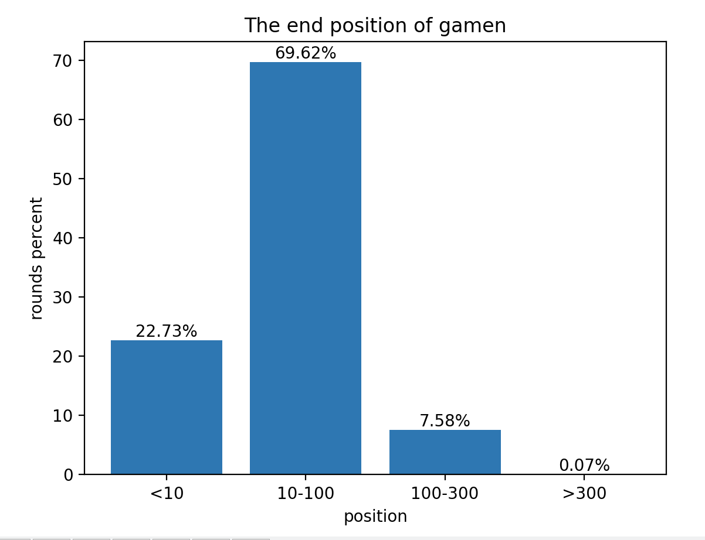

Guess 2/3 of the Average dApp Game Design
Guess 2/3 of the Average is a classic game-theory exercise. This post adapts it into a blockchain-based dApp. The basic rules are:
- A player pays any amount to join a round.
- Sum the total amount paid by all players.
- Take two-thirds of the average of this total as the winning number.
- The player whose paid amount is closest to the winning number wins.
Reward rules:
- The winner receives the round’s total amount.
- The contract collects a 1 % service fee from the total each round.
A key question is how many players are in a round—i.e., when does a round end? The ending rule is:
- When a player joins, they learn they are the n-th participant.
- Generate a random number x (10 ≤ x ≤ 100).
- Define a random boundary l, r = n − x, n + x.
- Draw another random number y within [l, r].
- If y == n, the round ends.
Additional rules:
- If a user joins multiple times, only their first entry counts.
- If several users pay identical amounts, the one who joined first wins.
Those are all the rules.
The ending rule is a bit involved, so here’s an example. Suppose a player is the n = 50-th entrant and x = 10. The boundary becomes l, r = 45, 55. A new random number is picked in [45, 55]; if it happens to be 50, the round ends.
Why do this? Because blockchain data are public. In the original game, every choice is hidden, which is hard to replicate on-chain. The dApp version therefore differs in two main ways:
- A player may pay any amount—even 0 or extremely large—whereas the original game had an upper cap.
- The number of players is unknown, while the original fixed it.
Both changes stem from on-chain transparency, so randomness must be added. Without a random ending, later players would always have an advantage by seeing earlier entries.
Of course, the last player cannot always overturn the result, especially with an upper cap, but if the player count is random there is no guaranteed “last” player—no one knows when the round will stop. Even someone rich enough to swing the average could be overtaken instantly.
The original game required integer inputs; the dApp version lifts that restriction because a smart contract can handle arbitrary precision.
Why the ending rule works
Its effect is to make a round end, in most cases, when the player count falls in **[10, 100]**—the range set by x in rule 9.
Think of it this way: every user has a random chance to end the round, between 1⁄10 and 1⁄100. If the chance were 1⁄10, a round would typically end after about 10 players; if 1⁄100, after about 100 players. Thus x roughly limits the player count. (The [10, 100] range is approximate, not an exact calculation.)
Using this rule, I simulated 100 000 rounds and recorded the player count at which each ended. Code: guessavg/emulate_tool

The horizontal axis is player count; the vertical axis is how many times a round ended at that count. Near 1, there are 2 500 occurrences—i.e., 2.5 % of rounds ended after a single player.

If raw counts feel abstract, see the ratio chart: no single count exceeds 2.5 %. Early positions have higher odds because every round starts from zero.
This ratio view is clearer: about 20 % of rounds end with fewer than 10 players, ~70 % within [10, 100], and only 0.07 % need more than 300 players.
Although the distribution is not perfectly normal, it meets the goal: rounds finish at random yet reasonable times, avoiding too-few or too-many participants while still allowing a small chance (up to ~500 players).
I believe this is a sound design.
Update (2025-04-22)
Over a year ago I wrote “‘Guess 2/3 of the Average’ dApp Game Design”.
Thanks to modern ChatGPT, implementing the game is now easy; contract and front-end are quick to build. I spent only two hours today to create a demo page.
Play here: https://guessavg.oiia.network/
Some notes:
- The mini-game currently runs on Oiia Network. Contract address
0x6eb07...BA8F1 - Joining simply calls a contract function and transfers funds—for example, tx
0x1bfb2...10936 - Contract code: guessavg/contract. It can be deployed anywhere; I used Oiia because it’s free.
- Front-end code: guessavg/game, used with the contract.
- Get test OIIA from the faucet: https://faucet.oiia.network/
- The private key below holds 10 OIIA for testing. Duplicate entries from the same address are disallowed, so transfer OIIA to a fresh address first:
fdf0aec857f3ac4fe146e0d00fb3a7a729646a081719df3f4e168a541a21893b - Metamask shows an error when adding Oiia, but it actually succeeds; I haven’t debugged it. A month ago this code raised no error.
- Oiia Network may disappear at any time.
- Just for fun…
Update (2025-05-06)
Oiia Network shut down today because I no longer wish to fund an unused chain. The demo has moved to Base.
- Demo: https://guessavg.github.io/game/
- Contract on Base:
0x4BbeE...868D2 - You need ETH on Base to play.
- The game is easier now; a round ends after only two or three players.